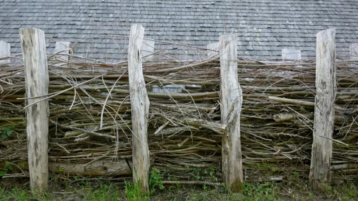

Brush Fence

Another old timey fencing type, brush fences were built by stacking cleared brushwood – consisting of small trees or twiggy vegetation – until it forms a structure several feet tall and wide.
When complete, brush fences were practically impenetrable because of the dense thicket of twigs and branches.
A more refined, but still low tech approach, involves long branches laid between parallel sets of thick wooden poles. Flexible twigs can used to create a gorgeous arbor.